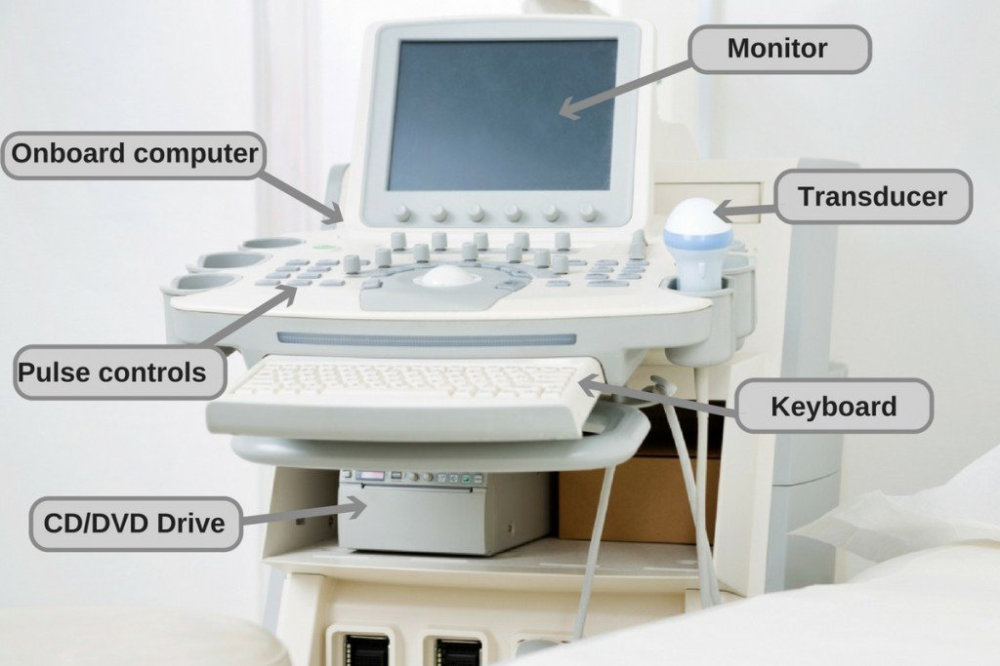

Basic Concepts
Frequency
Frequency refers to the number of cycles of compressions and rarefactions in a sound wave per second, with one cycle per second being 1 hertz. While the term ultrasound generally refers to sound waves with frequencies above 20,000 Hz (the frequency range of audible sound is 20 to 20,000 Hz), diagnostic ultrasound uses frequencies in the range of 1-10 million (mega) hertz.
Wavelength
The wavelength is the distance traveled by sound in one cycle, or the distance between two identical points in the wave cycle i.e. the distance from a point of peak compression to the next point of peak compression. It is inversely proportional to the frequency. Wavelength is one of the main factors affecting axial resolution of an ultrasound image. The smaller the wavelength (and therefore higher the frequency), the higher the resolution, but lesser penetration. Therefore, higher frequency probes (5 to 10 MHz) provide better resolution but can be applied only for superficial structures and in children. Lower frequency probes (2 to 5MHz) provide better penetration albeit lower resolution and can be used to image deeper structures.
Propagation velocity
The propagation velocity is the velocity at which sound travels through a particular medium and is dependant on the compressibility and density of the medium. Usually, the harder the tissue, the faster the propagation velocity. The average velocity of sound in soft tissues such as the chest wall and heart is 1540 metres/second.
Attenuation
Sound energy is attenuated or weakened as it passes through tissue because parts of it are reflected, scattered, absorbed, refracted or diffracted.
Reflection
A reflection of the beam is called an echo and the production and detection of echoes forms the basis of ultrasound. A reflection occurs at the boundary between two materials provided that a certain property of the materials is different. This property is known as the acoustic impedance and is the product of the density and propagation speed. If two materials have the same acoustic impedance, their boundary will not produce an echo. If the difference in acoustic impedance is small, a weak echo will be produced, and most of the ultrasound will carry on through the second medium. If the difference in acoustic impedance is large, a strong echo will be produced. If the difference in acoustic impedance is very large, all the ultrasound will be totally reflected. Typically in soft tissues, the amplitude of an echo produced at a boundary is only a small percentage of the incident amplitudes, whereas areas containing bone or air can produce such large echoes that not enough ultrasound remains to image beyond the tissue interface.
Absorption
Tissue absorption of sound energy contributes most to the attenuation of an ultrasound wave in tissues.
Scattering
Not all echoes are reflected back to the probe. Some of it is scattered in all directions in a non-uniform manner. This is especially true for very small objects or rough surfaces. The part of the scattering that goes back to reach the transducer and generate images is called backscatter.
Transducer
Inside the core of the transducer are a number of peizo-electric crystals that have the ability to vibrate and produce sound of a particular frequency when electricity is passed through them. This is how ultrasound waves are formed. These transducers also act as receivers for the reflected echoes as they generate a small electric signal when a sound wave is incident upon it.
Duty factor
In most modes of ultrasound operation, only 1% of the time is spent in generating a pulse of ultrasound waves and 99% of the time is then spent listening for the echoes. This is called the duty factor…1% in such a case.
Pulse repetition frequency (PRF)
The PRF is the number of pulses (send and listen cycles) of ultrasound sent out by the transducer per second. It is dependent on the velocity of sound and on the depth of tissue being interrogated. The deeper the tissue being examined, the longer the transducer has to wait for echoes to come back, hence a lower PRF.
Beam
The ultrasound beam is focused by the transducer so as to be as close to a flat plane as possible. The beam is made up of tens to hundreds of scan lines.
Orientation
There is usually a dot, groove or light on one ends of the transducer to assist orientation. A corresponding marking is also displayed on the screen to help give an orientation to the images.
Resolution
Axial resolution:The ability to resolve objects in the line of the ultrasound beam. Factors affecting axial resolution include Spatial Pulse Length (SPL) and frequency.
Lateral resolution: Resolution at 90° to the direction of the beam. Factors affecting lateral resolution are width of the beam, distance from the transducer, frequency, side and grating lobe levels.
Temporal resolution: Refers to the ability to detect moving objects in the field of view in their true sequence. The number of frames generated per second (frame rate) determines temporal resolution.
Artifacts
Artifacts are errors in images. They are normally caused by physical processes that affect the ultrasound beam and that in some way alter the basic assumptions the operator makes about the beam. To understand artifacts, one needs to consider the basic assumptions made in producing an ultrasound image:
-
Sound waves travel in straight lines.
-
Reflections occur from structures along the central axis of the beam.
-
Intensity of reflection corresponds to the reflector scattering strength
-
Sound travels at exactly 1540 m/sec.
-
Sound travels directly to the reflector and back.
Doppler Effect
Doppler shift is given by the following formula:
FD = (V X FO ) / C
where
FD is the Doppler shift
FO is the original frequency
V is the velocity of blood
C is the speed of sound in tissues
Therefore V = (FD X C) / FO
A further refinement of this formula is: V = (FD X C) / (2FO X Cosθ)
The original frequency is multiplied by 2 because the Doppler shift occurs twice – when the original wave is incident on the moving RBC and when the moving RBC reflects it back. Cosine theta (Cosθ) is applied as a correction for the angle between the ultrasound beam and the direction of blood flow. Cosθ = 1 if the beam is parallel to the direction of blood flow and maximum velocity is measured. Cosθ = 0 if the beam is perpendicular to the direction of blood flow and zero velocity is measured
It is noteworthy that for Doppler, maximum velocity information is obtained with the ultrasound beam aligned parallel to the direction of the blood flow being studied. Otherwise the peak velocity and consequently the pressure gradient (see below) will be underestimated. This is in sharp contrast to conventional echo where the best image quality is obtained with the ultrasound beam aligned perpendicular to the structure being studied.
Since the original frequency value (2FO) is in the denominator in the equation, it is important to remember that maximum velocity information is obtained using low frequencies (usually 2 MHz). This is in contrast to conventional 2-D echo where higher frequencies deliver higher resolutions.
There is a direct relationship between the peak flow velocity through a narrow valve and the pressure gradient across it. Understandably, when the valve orifice is small, blood flow has to accelerate in order to eject the same stroke volume. The smaller the orifice, the higher the acceleration and velocity. This increase in velocity can be measured using Doppler echo. The pressure gradient across the valve can be calculated using the simplified Bernoulli equation:
Pressure gradient = 4 v2
This equation is frequently used during Doppler evaluation of stenotic valves, regurgitant lesions and intra-cardiac shunts. The velocity information provided by Doppler complements the anatomical information provided by M-mode and 2-D echocardiography.
Analysis of the returning Doppler signal not only provides velocity information but also information about flow direction. By convention, velocities towards the transducer are displayed above the baseline and velocities away from the transducer are displayed below the baseline.
The returning Doppler signal is a spectral trace of velocity against a time axis. The area under the curve (AUC) of this spectral trace is known as the Velocity Time integral (VTI)….also known variably as TVI or FVI (flow velocity integral). The value of the VTI is determined by peak flow velocity and ejection time and can be calculated by the processor of most echo machines.
Equipment
Ultrasound scanners consist of a console containing a computer and electronics, a video display screen and a transducer that is used to do the scanning. The transducer is a small hand-held device that resembles a microphone, attached to the scanner by a cord. Some exams may use different transducers (with different capabilities) during a single exam. The transducer sends out inaudible, high—frequency sound waves into the body and then listens for the returning echoes from the tissues in the body. The principles are similar to sonar used by boats and submarines.
The ultrasound image is immediately visible on a video display screen that looks like a computer or television monitor. The image is created based on the amplitude (loudness), frequency (pitch) and time it takes for the ultrasound signal to return from the area within the patient that is being examined to the transducer (the device used to examine the patient), as well as the type of body structure and composition of body tissue through which the sound travels. A small amount of gel is put on the skin to allow the sound waves to best travel from the transducer to the examined area within the body and then back again. Ultrasound is an excellent modality for some areas of the body while other areas, especially the lungs, are poorly suited for ultrasound.

Transducers
A device that produces sound waves that bounce off body tissues and make echoes. The transducer also receives the echoes and sends them to a computer that uses them to create a picture called a sonogram. Transducers (probes) come in different shapes and sizes for use in making pictures of different parts of the body. The transducer may be passed over the surface of the body or inserted into an opening such as the rectum or vagina.